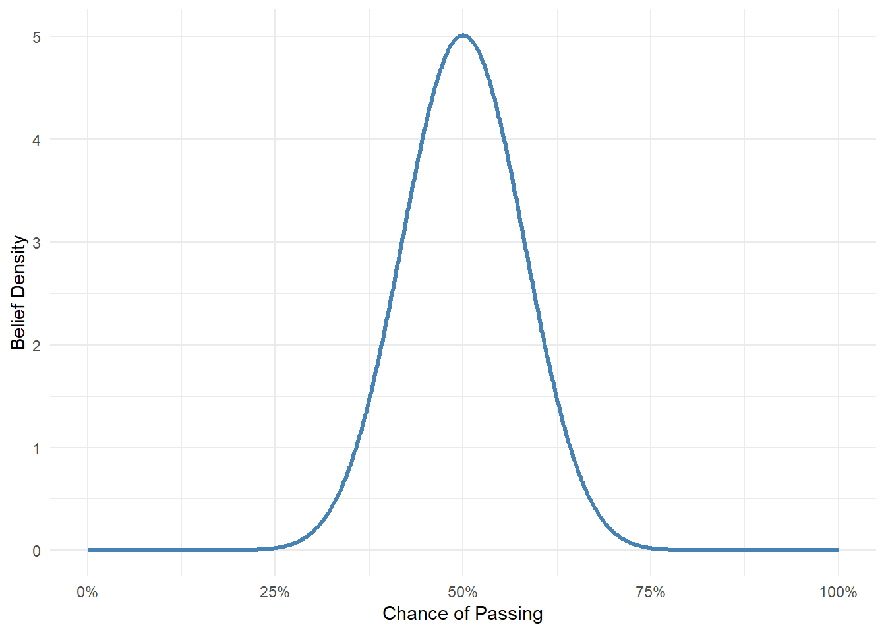
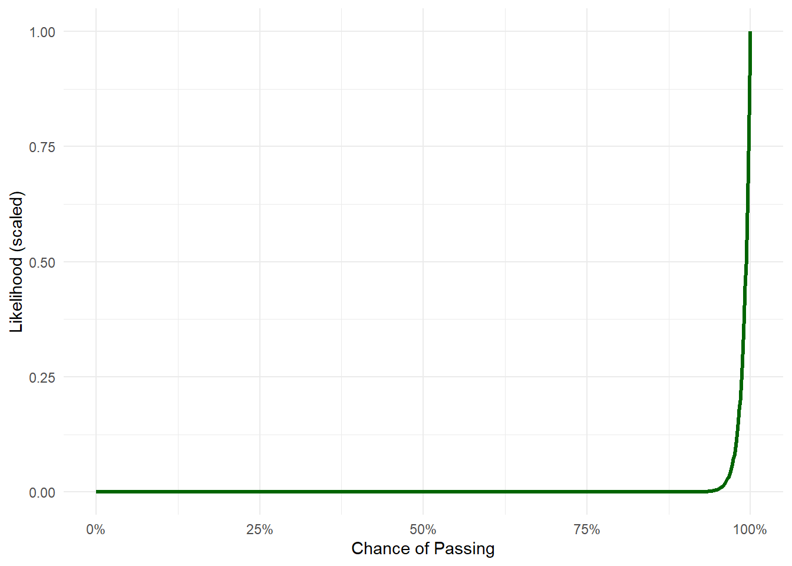
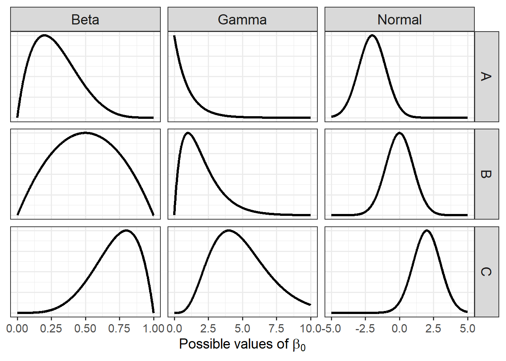

Most of the statistics you’ve probably learned so far has been based in what’s called “frequentist” statistics. The analysis you’ll be using for occupancy models (at least this particular implementation) will be using something called “Bayesian” statistics (pronounced “Bay-zee-’n”). These are the two main frameworks currently used to learn something from data (unless you want to start splitting philosophical hairs). Within this document we’re going to start with what Bayesian statistics is, how to move from frequentist to Bayesian statistics, and how a Bayesian model works. We’ll leave occupancy models to the side for the time being.
What is frequentist statistics?
Almost every scientist understands statistics under the frequentist framework. That’s not because it’s philosophically better or has a cleaner underlying logic. It’s because that’s what they were taught. As simple as that. This has led to frequentist methods becoming the default; not because they’re necessarily better, but simply because that’s how people were taught.
Frequentist statistics is based on the idea that there’s one fixed, true value (like the average height of all people) that we’re trying to estimate. We can’t see that true value directly, but we can estimate it by using stats to analyse data we’ve collected. The more data we have, especially if we had an infinite amount, the better our estimate would be (i.e. the closer we’ll get to the elusive “Truth”). Frequentist methods revolve around the idea of something called long-run frequencies: if we repeated an experiment over and over, how often would we get a result as “extreme” as the one we observed? It doesn’t assign probabilities to hypotheses or parameters, only to the data we might observe under certain assumptions.
In contrast, Bayesian statistics treats unknown values (like parameters, e.g. the average human height) as something that is inherently uncertain (i.e. we won’t ever be able to get to that “Truth”). Instead it allows us to assign probabilities to such values based on what we already believe (called a “prior”), then updates those beliefs with data. So where frequentists say, “this result would happen 5% of the time by chance,” Bayesians say, “given the data, there’s an 80% chance this hypothesis is true.”
Think of it like this: a frequentist sees probability as something that only makes sense when talking about random events we could repeat (so called “long-run frequencies”), like flipping a coin or running an experiment thousands of times. So they’d never say, “there’s a 70% chance the average height is 1.75 m”, because the True average height is a fixed number, even if we don’t know it. Instead, they’d say, “if we did this study again and again, 95% of the time our results would fall within a range that contains the true value.” That’s not particularly intuitive and is one of the big criticisms (at least mine) of frequentist statistics. So much of frequentist statistics is not intuitive.
A Bayesian, on the other hand, is comfortable saying, “given what we knew before and what the data tells us now, there’s a 70% chance the average height is 1.75 m.” They treat unknowns, like the average human height, more like things we can be uncertain about and, instead of pretending that they know the absolute truth, they put probabilities on it. It’s like the difference between saying, “How often would this result happen if we kept repeating the study?” versus, “Given everything we know, how confident are we in this being true?” This is one of the big benefits of Bayesian statistics. It’s closer to how normal humans actually think (at least I think more like this).
For example, if I asked you what you think your chances are of passing your thesis, you might be pessimistic and say something like 50%. That’s your prior; your belief about the outcome (here passing your thesis) before seeing any data. Now, what if I told you I’ve supervised 100 students before, and every single one of them passed? That’s strong evidence that the pass rate is high, close to 100%. This is your data, and the likelihood is how well that data fits different assumptions about the pass rate. With this new information, you’d probably update your belief and maybe revise your estimate up to, say, 80%. It’s still not 100% because you haven’t forgotten your initial uncertainty; you started out thinking there was only a 50% chance, so you’re cautious. But you’re also not ignoring the fact that 100 students passed. Your new revised 80% chance of passing is your posterior.
That’s the Bayesian approach: start with a prior belief, then update it using data to get a posterior. Conversely, if we were frequentists, we wouldn’t talk about the probability that you will get a first. Instead, we’d ask something like: “If many students like you wrote their theses under similar conditions, how often would they pass?”. In that case, a frequentist would ignore your belief and insist you have a 100%.
Bayes Theorem
The equation you may well see whenever you look up Bayesian statistics is Bayes’ Theorem, which is some version of:
\(P(Parameters | Data)\) is the posterior. In the above thesis grade example, this is the 80% probability to pass, given you thought you had a 50% chance to pass but also that 100% students all passed. The “parameter” here is your estimated pass rate and the data comes from all the previous students.
\(P(Parameters)\) is the prior. You’re belief of what the parameter value is before seeing the data. In the thesis example, this is your belief that you have a 50% chance of passing.
\(P(Data | Parameters)\) is the likelihood, which is a measure of how likely the data is, given the parameter values. In the above example, this crudely maps to 100% of students passing.
\(P(Data)\) is the evidence; it’s a “normalizing constant” that ensures everything sums to 1 (or 100%). It tells us how likely we are to observe the data, considering all possible parameter values. More technically, it’s the probability of observing the data under any possible parameter value. Or, in the thesis example, it’s the 100 students.
Visualising Bayes
Let’s now add some visual intuition to the thesis pass example using simple figures. Imagine we want to visualise your belief as a curve that shows how likely you think different pass rates are.
Your Prior Belief (before seeing the data)
You start off thinking you have a 50% chance of passing. That doesn’t mean you’re certain, it’s just your best guess. You might be unsure, so you’re open to the idea that it could be lower or higher. Your prior might look like this:
Code
library(ggplot2)library(dplyr)theta <-seq(0, 1, length.out =1000)prior <-dbeta(theta, 20, 20)data.frame(theta, prior) |>ggplot(aes(x = theta, y = prior)) +geom_line(color ="steelblue", size =1.2) +scale_x_continuous(labels = scales::percent) +labs(x ="Chance of Passing", y ="Belief Density") +theme_minimal()

The Data (100 students passed)
Now you find out that 100 students have taken the thesis before you, and all of them passed. That’s really strong evidence that the pass rate is high, probably very near to 100%.
We can visualise how likely the observed data is for different values of the pass rate, this is the likelihood.
Code
likelihood <- theta^100likelihood <- likelihood /max(likelihood)data.frame(theta, likelihood) |>ggplot(aes(x = theta, y = likelihood)) +geom_line(color ="darkgreen", size =1.2) +scale_x_continuous(labels = scales::percent) +labs(x ="Chance of Passing", y ="Likelihood (scaled)") +theme_minimal()
In Bayesian terms, this evidence updates your belief.
The Posterior (updated belief)
Your updated belief, the posterior, combines your initial guess of roughly 50% with the strong evidence we have from 100 students. The resulting curve now shifts to the right — it’s taller near 85%–90% but still not at 100%, because you haven’t thrown out your original uncertainty.
Code
posterior <-dbeta(theta, 120, 20)posterior_df <-data.frame(theta =rep(theta, 3),density =c(prior, likelihood, posterior),belief =rep(c("Prior", "Likelihood", "Posterior"), each =length(theta)))posterior_df |>ggplot(aes(x = theta, y = density, color = belief)) +geom_line(size =1.2) +labs(x ="Chance of Passing", y ="Belief / Likelihood (scaled)", colour ="") +scale_x_continuous(labels = scales::percent) +theme_minimal() +scale_color_manual(values =c("steelblue", "darkgreen", "firebrick"))

Importantly, in Bayesian statistics, we don’t have a single value for our parameter estimate (or posterior). Instead we have a full distribution of values. This becomes an insanely valuable property that can be exploited in many different ways, which we’ll get back to later on.
For now, your posterior is more-or-less the multiplication of your prior belief with the likelihood (\(P(Data | Parameters)\times P(Parameters)\)). In this case, giving you a happy middle ground of ca. 85% chance to pass.
This is how Bayesian statistics works in practice:
Start with a belief (or hypothesis).
See some evidence (i.e. collect some data).
Update your belief accordingly.
In this case, seeing 100 successful students shifts your belief quite a lot, but not all the way to 100%, because your prior belief still matters! You know yourself after all! You’d be silly to just ignore that.
In short, this is kinda the scientific method, isn’t it? (pls don’t tell any frequentists that I said that…)
Bayesian models
The above example is cute and all but how does this translate into an actual model? For instance, what about the model we started off with in the very first document:
\[
y_i \sim Bernoulli(p_i) \\
\]
\[
logit(p_i) = \beta_0
\]
How do we make this Bayesian?
Well, with surprisingly little change. All we need to do is add a prior for each parameter in the model. Here, the only parameter we have is \(\beta_0\). The challenge is; how do we define our belief in numbers?
This is where statistical distributions become insanely useful. Distributions allow us to define a range of values at differing frequencies. For example, in the thesis example, when we specified the range of pass rates we thought might be reasonable:
Code
theta <-seq(0, 1, length.out =1000)prior <-dbeta(theta, 20, 20)data.frame(theta, prior) |>ggplot(aes(x = theta, y = prior)) +geom_line(color ="steelblue", size =1.2) +scale_x_continuous(labels = scales::percent) +labs(x ="Chance of Passing", y ="Belief Density") +theme_minimal()
This was done using a distribution. Specifically, we used a \(Beta\) distribution with the “technical details” set such that it looked like the above, but we can change the distribution and values to anything we want.
So for our equation:
\[
y_i \sim Bernoulli(p_i) \\
\]
\[
logit(p_i) = \beta_0
\]
We just need to specify what we think \(\beta_0\) will be using a distribution, which could be whatever we think it could be. If we’re not very confident, then we can make the distribution wider. If we think the minimum or maximum will be 0 or 1, then we can choose a distribution that will stay within those bounds.
Here are a handful are randomly chosen distributions you could pick from to use as a prior for anything:
Code
library(dplyr)library(tidyr)x_beta <-seq(0, 1, length.out =1000)x_normal <-seq(-5, 5, length.out =1000)x_gamma <-seq(0, 10, length.out =1000)normalize <-function(y) y /max(y)beta_df <-bind_rows(tibble(x = x_beta, density =normalize(dbeta(x_beta, 2, 5)), Distribution ="Beta", Variant ="A"),tibble(x = x_beta, density =normalize(dbeta(x_beta, 2, 2)), Distribution ="Beta", Variant ="B"),tibble(x = x_beta, density =normalize(dbeta(x_beta, 5, 2)), Distribution ="Beta", Variant ="C"))normal_df <-bind_rows(tibble(x = x_normal, density =normalize(dnorm(x_normal, -2, 1)), Distribution ="Normal", Variant ="A"),tibble(x = x_normal, density =normalize(dnorm(x_normal, 0, 1)), Distribution ="Normal", Variant ="B"),tibble(x = x_normal, density =normalize(dnorm(x_normal, 2, 1)), Distribution ="Normal", Variant ="C"))gamma_df <-bind_rows(tibble(x = x_gamma, density =normalize(dgamma(x_gamma, shape =1, rate =1)), Distribution ="Gamma", Variant ="A"),tibble(x = x_gamma, density =normalize(dgamma(x_gamma, shape =2, rate =1)), Distribution ="Gamma", Variant ="B"),tibble(x = x_gamma, density =normalize(dgamma(x_gamma, shape =5, rate =1)), Distribution ="Gamma", Variant ="C"))df <-bind_rows(beta_df, normal_df, gamma_df)ggplot(df, aes(x = x, y = density)) +geom_line(size =1.1) +facet_grid(cols =vars(Distribution), rows =vars(Variant), scales ="free_x") +labs(x =expression("Possible values of "* beta[0]),y =NULL ) +theme_bw(base_size =14) +theme(axis.text.y =element_blank(),axis.ticks.y =element_blank(),strip.text =element_text(size =14) )

Going back to our model, let’s say I think the value for \(\beta_0\) is likely:
probably less than one
can’t go below zero
a value close to zero is most likely.
In that case, from the above figure of distributions, I might want to use the top Gamma distribution. The “technical details” of that specific Gamma distribution is that it uses a value of 1 for “shape” and 1 for “rate”, or \(Gamma(1,1)\) (ignore what rate and shape are for now - they aren’t important at this stage).
If I used this as my prior for \(\beta_0\), then my equation would be:
\[
y_i \sim Bernoulli(p_i) \\
\]
\[
logit(p_i) = \beta_0
\]
\[
\beta_0 \sim Gamma(1,1)
\]
Which is to say that my guess is that \(\beta_0\) will be probably be somewhere in the distribution of values specified by \(Gamma(1,1)\).
And that’s it. We have a Bayesian model, with a prior specified for the only parameter in the model, \(\beta_0\). As a consequence of adding that extra line, our entire philosophy has shifted as well.
So the only real “Bayesian” thing we need to do when running Bayesian analysis is to specify a prior that captures our prior belief.
The challenge, however, is that you will (very likely) only know a handful of distributions and won’t know their intricate details. That’s why I created a website called, creatively, Distributions. If you go to this site, you can play around with different distributions to, hopefully, find the right one that captures your prior belief, without getting bogged down in details.
As a slight tangent, you can think of a frequentist model as being the equivalent to a Bayesian model except that they use the most impossibly, insanely vague guesses for priors. For instance, the above model would be (kind of) similar to:
\[ y_i \sim Bernoulli(p_i) \]
\[ logit(p_i) = \beta_0 \]
\[ \beta_0 \sim Uniform(-\infty,\infty)\]
Which is like saying, “the parameter \(\beta_0\) is probably somewhere between negative infinity and positive infinity and I completely refuse to say anything else”.
What’s a sensible prior?
Choosing the “correct” prior is often where people get nervous when using Bayesian statistics. There is some justification to this, in certain circumstances. For example, if you have a very small dataset and a very weak effect (e.g. changing a word on a sign to see how it changes human behaviour) and a strong prior (more correctly called an “informative prior”), then the prior might dominate over the data, in which case your posterior will just be your prior.
Putting such scenarios to the side, in general you’re probably better at choosing a prior than you might think. Consider the following model of baby height as they age from zero to five years old:
\[ height_i \sim Normal(\mu_i, \sigma^2) \]
\[ \mu_i = \beta_0 + \beta_1 \times Age_i \]
Where:
\(height\) is the height in cm of baby \(i\)
\(\beta_0\) is the intercept (i.e. height when age is zero)
\(\beta_0\) is the growth rate (i.e. for every additional year of age, how much does a baby grow)
I’m willing to bet you don’t have a baby, but I’m also willing to bet you could make reasonable guesses at what \(\beta_0\) and \(\beta_1\) would be.
How tall do you think a new born baby is? I don’t really know but there are a few things I’m sure of. It won’t be negative - that much is hopefully obvious (a baby won’t be -5 cm tall at birth). It will probably be more than, like, 20 cm. It probably won’t be more than 80 cm. I can also do a quick search online for any information.
These pieces of information can help me to get the right sort of prior. If I head over to Distributions I can now shop around and find a distribution to match my expectations.
Playing around, I might settle on a \(Gamma\) distribution which looks something like:
Here our slope (i.e. growth rate) prior uses a log-Normal distribution, specifically: \(LN(2,0.3)\).
So our Bayesian model is now:
\[ height_i \sim Normal(\mu_i, \sigma^2) \]
\[ \mu_i = \beta_0 + \beta_1 \times Age_i \]
\[\beta_0 \sim Gamma(22,0.5)\]
\[\beta_1 \sim LN(2,0.3)\]
However, if you’re ever really stuck and don’t have any idea of what a sensible prior would be, you can use something called an “uninformative prior”. Often, some version of \(Uniform(min, max)\), which could look like:
Which basically says, I don’t know what baby growth rate is, but it’s probably between -100 and 100 cm per year. You can always change the values to e.g. \(Uniform(-1, 1)\) or \(Uniform(0,1)\). The important part is that the \(Uniform\) distribution does not have a peak, a region where you think some values are more likely than others. In the above figure, I’m saying that baby growth rate could be anywhere from -100 to 100 with equal probability.
In the shell of a nut
That’s the theory of the Bayesian framework and Bayesian statistics. Relative to frequentist statistics, all we’ve done here is just add our prior belief into the model. But that “small” act has led to a fairly radical change in our statistical philoshophy.
In practice there are technical differences as well, in terms of how we estimate the posterior, but we’ll cover that in the next document.